영상은 코드가 되고,
가치는 선택에 남는다
AI가 영상을 만드는 시대의 다음 질문. 더 많이 만드는 능력, 좋은 결과를 가리는 판단, 그리고 생성하지 않아야 할 원본의 가치.
원본 에피소드EP 119. 코드로 재생하는 AI: Video as Code와 생성형 오독
제작의 자동화가 드러낸
판단과 참여의 가치
이번 회차는 픽셀을 직접 생성하는 비디오 모델 대신, LLM이 프로그램을 작성해 영상을 만드는 Video as Code를 두 방향에서 탐색함. 박종현은 실제 녹화 영상을 AI로 편집·증강한 채널 실험을, 최승준은 bytebeat 코드를 소리·이미지·이모지·이야기로 바꾼 ‘생성형 오독’을 소개함.
두 사례를 관통하는 쟁점은 결과를 만드는 능력과 결과의 가치를 판단하는 능력 사이의 간극. 제작 도구가 좋아져도 큐레이션은 남고, 참여자의 손길이 의미인 작업에서는 생성으로 대체하지 않을 부분을 정해야 함.
읽기 기준 · 제공된 영상 노트를 편집·재구성한 글. 발언은 한국어 수동 자막에, 장면 설명은 360p 추출 이미지에 근거함. 채널 성과와 모델 비교는 출연자 발표이며 독립 검증되지 않음. 출처와 한계 ↓
먼저 읽는 세 가지 발견
먼저 확인된 이점은
제작 처리량
박종현은 AI 편집 이후의 성장을 “더 많이 올릴 수 있었기 때문”으로 설명함. 편당 품질 향상과 총조회수 증가는 분리해서 읽어야 함.
준수한 결과 다음의 병목은
좋은 결과를 고르는 일
여러 모델과 라이브러리가 쓸 만한 모션 그래픽을 만들었다는 평가. 그러나 AI 사용을 눈치채지 못했다는 사실만으로 콘텐츠의 가치를 입증할 수는 없음.
어떤 원본은
참여했다는 사실이 가치
유치원 원가 영상에서 아이들이 직접 그린 그림을 남긴 선택. 생성의 경계는 화면의 완성도뿐 아니라 작품이 누구에게 어떤 의미인지에 달려 있음.
픽셀 대신, 프로그램을 생성한다
Video as Code의 핵심은 LLM이 애니메이션 코드를 작성하거나 Blender 같은 도구를 다루고, 그 실행 결과를 영상으로 렌더링하는 방식.
박종현은 샌프란시스코에서 공동 개최한 행사로 이야기를 시작함. 질문은 “AI가 픽셀을 생성해야 하는가, 프로그램을 작성해야 하는가?”였음. Seedance처럼 픽셀을 직접 생성하는 접근과 구별하며, 당시 용어는 Video as Code와 Code as Video로 혼용된다고 설명함.
같은 행사에서 두 제작 방향이 만남. 공동 호스트 Sina Atalay는 개념을 코드로 시각화하는 설명 영상을 만들고, 박종현은 사람이 말하고 행동한 녹화 원본을 더 좋은 콘텐츠로 편집하는 데 집중함.
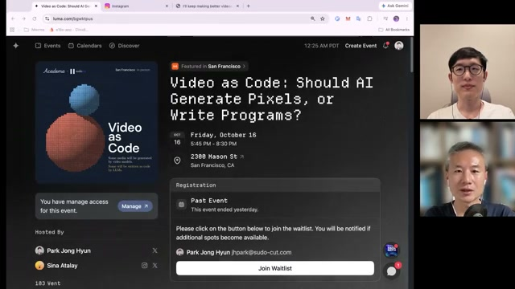
- 설명할 개념
- LLM이 코드 작성
- 시뮬레이션·영상
- 실제 녹화 원본
- 자동 편집·클리핑
- 코드로 시각적 증강
발표 내용을 바탕으로 재구성한 개념도. 제품의 전체 기술 구조를 뜻하지 않음.
설명 영상의 사례: ManimGX
Sina는 약 18개월 동안 3Blue1Brown의 Manim을 확장한 ManimGX를 개발해 왔다고 소개됨. 발표에서는 Manim과 1:1 호환되는 라이브러리로 설명되며, 영상의 시각 요소뿐 아니라 오디오·음악까지 코드로 제작했다고 함.
Instagram 계정 academaai에는 ray tracing, 반사, 자동차 주행 같은 개념을 설명하는 영상이 등장함. 박종현에 따르면 하루 한 편씩 올린 10개 남짓의 영상 중 75만·96만 회를 기록한 사례가 있었고, ray tracing 영상부터 반응이 커져 약 10일 만에 100만 회 단위 조회수에 도달함. 이는 발표에서 소개된 성과이며 별도 확인된 지표는 아님.
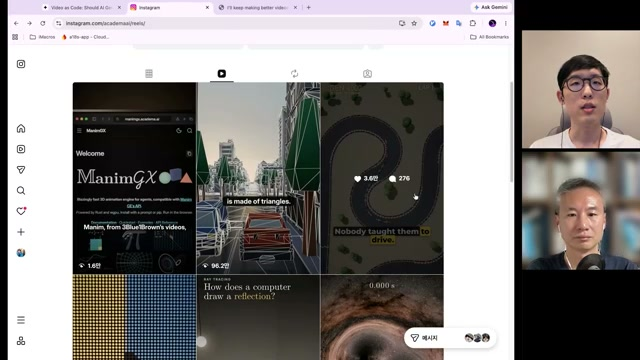
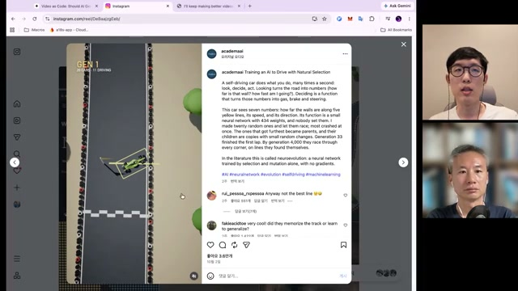
AI 편집이 먼저 바꾼 것은 업로드의 양
박종현의 출발점은 이미 녹화된 footage. 한 에피소드에 최소 20시간 이상 들던 편집을 AI에 맡기면서, 더 자주 발행할 수 있는 구조를 만들었다는 설명.
처음에는 사람이 편집한 영상과 AI 편집 영상을 섞어 올림. 조회수가 비슷하고 구독자들이 AI 편집인 줄 몰랐다는 반응을 보이자, 현재 sudoremove 채널의 편집은 99%를 AI에 맡긴다고 밝힘. 다만 조회수 증가의 원인을 AI의 편집 품질 향상으로 단정하지는 않음.
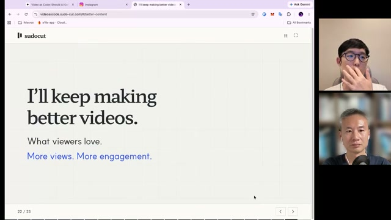
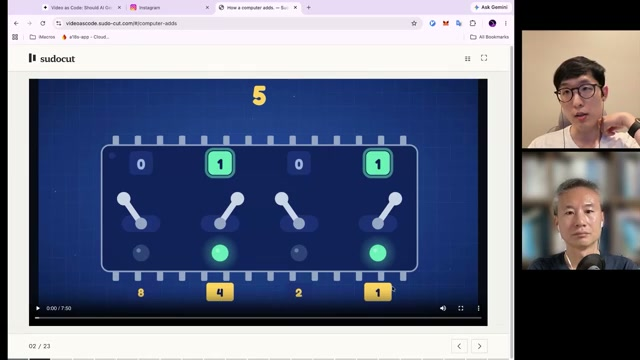
부업 유튜버로서 한 편에 들던 최소 시간이라는 본인 설명.
sudoremove 채널 운영 방식에 관한 발표자의 진술.
YouTube Studio 표시값. AI 편집의 순수한 효과를 뜻하지 않음.
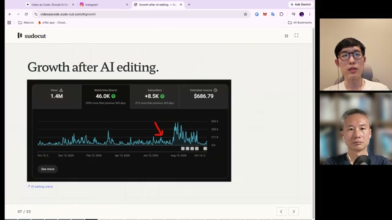
같은 원본, 서로 다른 채널
운동선수 인플루언서의 라이브를 허락받아, 구독자 0명에서 시작한 팬 채널에 AI 편집본을 올린 실험도 소개됨. 발표 화면에서는 AI 편집본의 조회수가 사람 편집본보다 높았음.
박종현은 원래 채널 운영자 역시 전문 편집자가 아니었다는 조건을 짚으며, AI가 비전문 편집자보다 나은 결과를 낼 수 있는 상태로 해석함. 이후 원래 운영자의 요청으로 메인 채널에도 AI 편집본을 올렸고 조회수가 눈에 띄게 올랐다고 함. 다만 스스로 표본이 작다는 한계를 인정함.
| 항목 | Channel A · 사람 편집 | Channel B · AI 편집 |
|---|---|---|
| 화면상 구독자 | 12K | 213 |
| 조회수 | 33,138회 | 66,338회 |
| 비교 기간 | 9월 18일–10월 12일 | |
| 해석에 필요한 조건 | 원본 채널 운영자는 비전문 편집자 | 구독자 0명 팬 채널에서 시작했다는 설명 |
자료: 00:10:02 발표 슬라이드와 발언. 채널 조건과 노출이 통제된 실험은 아니므로 편집 방식의 인과효과로 일반화할 수 없음.
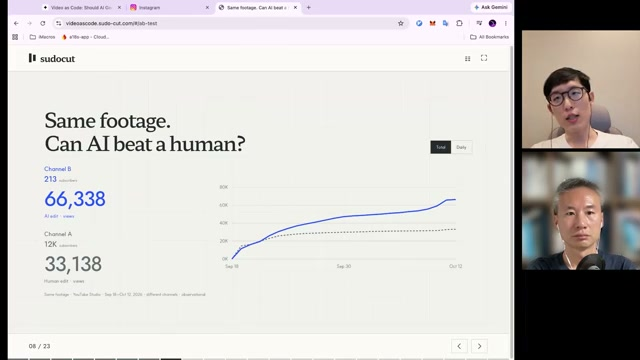
롱폼에서 쇼츠, 모션 그래픽과 더빙까지
SudoCut의 작업 흐름은 2~3시간 라이브 → 1~2시간 편집본 → 하이라이트 쇼츠로 이어짐. 처음에는 좋은 구간을 골라내는 데 집중했고, 이후 LLM이 클립 내용에 맞는 모션 그래픽 코드를 쓰도록 확장함.
예시에서는 한국어 라이브를 영어로 자동 더빙함. 최승준은 원래 목소리와 많이 다르다고 반응했고, 박종현은 한국어 버전도 가능하다고 답함. 모션 그래픽을 결합한 시도는 녹화 시점 기준 약 2주 전부터 진행했다고 설명함.
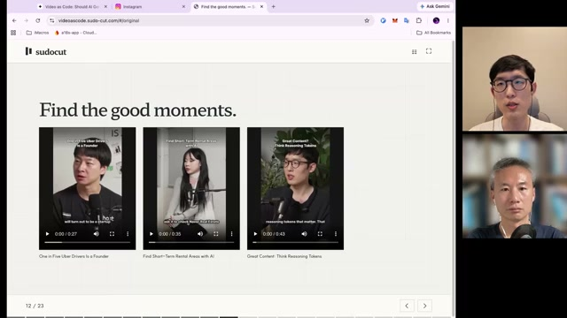
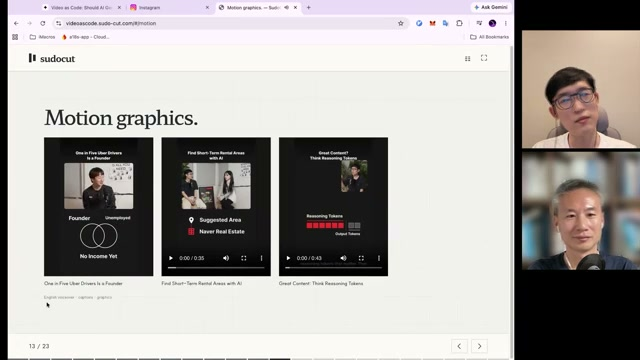
잘 만드는 도구가 많아질수록, 고르기가 어려워진다
발표의 모델·라이브러리 비교는 “어느 하나가 압도적”이라는 결론으로 끝나지 않음. 여러 결과가 준수해진 뒤에는 무엇이 정말 좋은지 판단하는 일이 남음.
박종현은 Opus 5.5부터 Video as Code가 본격적으로 떠올랐다고 평가함. 같은 클립으로 Opus 5.5와 GPT-6 계열을 비교한 뒤에는 “요즘 모델은 다 나쁘지 않다”는 취지로 정리함. 이는 발표자의 정성 평가이며, 정량 벤치마크 결과는 아님.
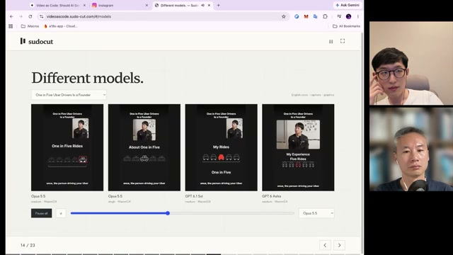
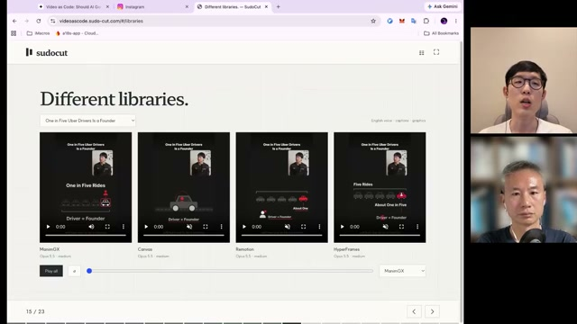
강의를 참고한 생성, 사람의 피드백으로 완성
앞서 본 Kurzgesagt 스타일 영상의 제작자는 공동 창업자 양지호. 유료 강의를 구매해 Codex에게 모션 그래픽 제작법을 공부하도록 시킨 뒤, 결과물을 보며 여러 차례 피드백을 반복했다고 설명함.
v3에서 v4로 넘어가는 단계에는 ‘craft pass’라는 이름을 붙임. 별도 자동 평가 기법을 가리키는 용어가 아니라, 마음에 들지 않는 부분을 고친 개발 과정의 별칭. 평가는 사람이 했음.
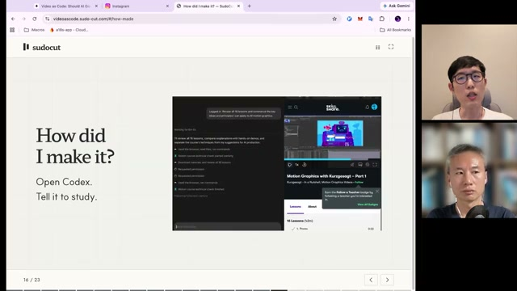
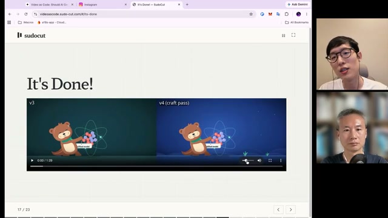
“But is it good content?”
박종현의 발표 슬라이드 · 00:18:30
박종현은 초기 AI 프런트엔드 결과물을 떠올림. 처음에는 불가능하던 일이 가능해졌다는 이유로 놀랐지만, 시간이 지나고 보면 조악한 결과물이기도 했다는 것. 영상도 지금 같은 단계를 지나고 있을 수 있으므로, 생성이 가능하다는 사실과 콘텐츠가 좋다는 판단을 분리해야 한다고 봄.
이 질문을 실제 시청자에게 던지기 위해 Vtuber·정치·스포츠·테크 리뷰 등 여러 카테고리의 채널을 자동 운영했다고 설명함. 원본은 허락받았거나 사용이 허용된 것만 활용했다고 밝힘.
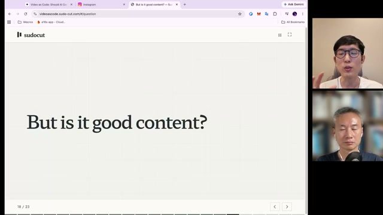
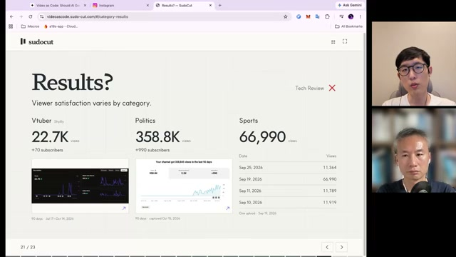
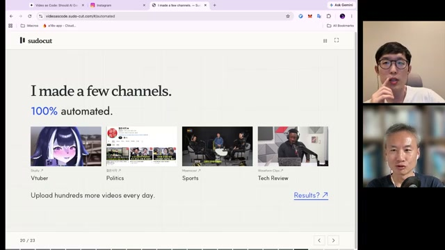
이 사례에서 가져갈 판단은 도구 하나의 승패보다 카테고리별 평가 기준의 필요성. 박종현은 좋은지 확신하기 어려운 결과를 시장에 공개하고, 시청자 반응을 본 뒤 해석하는 방식을 택함. 최승준은 이를 그로스 해킹과 비슷한 접근으로 설명함.
잘못 읽기를 거듭하면, 이야기가 생길까
최승준의 실험은 간단한 bytebeat 식에서 출발함. 코드를 소리로 읽고, 소리를 이미지로, 이미지를 이모지로 읽은 뒤, 그 이름들을 이야기와 게임으로 이어 붙임.
작업의 배경은 PROTOROOM의 ‘0.000001GB Matter Matters’. 후니다 킴·김승범으로 구성된 PROTOROOM은 bytebeat 코드를 실제 장치로 연주하는 공연·전시를 진행해 왔다고 소개됨. 최승준은 신승백 작가와 10여 년 이어 온 모임의 맥락에서, 동묘의 ‘백남준을 기억하는 집’에 초청 작가로 참여함. 올해 초 모임의 화두는 ‘Uneven Futures’였음.
맡은 역할은 원래 작업을 다르게 읽는 것. misalignment나 마술의 misdirection에 빗대어, 생성형으로 잘못 읽는다는 것이 무엇인지 탐색함.
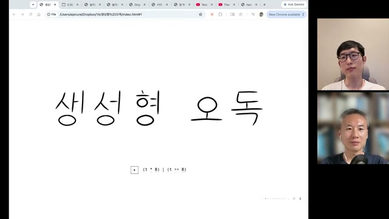
(t * 8) | (t >> 8). 그 직전에는 발표 덱의 넓은 행간과 크림색을 보고 모델의 디자인 스타일을 추측하는 대화가 이어짐.
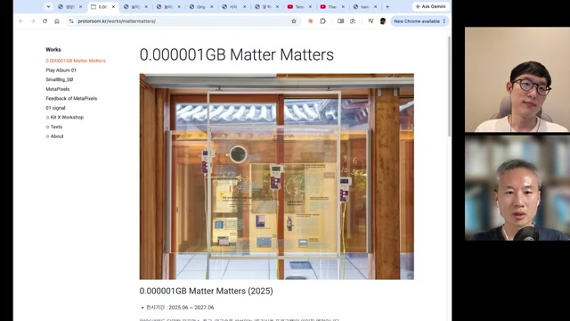
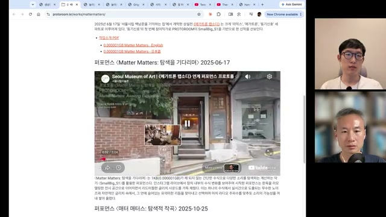
첫 단계: 소리를 잘 읽으려는 탐색
코드의 상수와 연산자 조합을 진화 알고리즘으로 탐색하고, 그리드의 셀을 눌러 즉시 소리를 듣는 도구를 만듦. 낮은 음에서는 드럼 같은 pulse가 나오는 등 소리 공간을 빠르게 훑을 수 있었지만, 최승준은 사람이 고생해서 만든 결과보다 품질이 훨씬 낮았다고 평가함.
작가들에게 받은 12개 샘플 중 3번과 9번이 특히 재미있었다고 회상함. 여러 채널을 동시에 연주하면 다양한 악기처럼 들렸고, UMAP으로 latent를 살펴보는 지도도 보여 줌. 이 부분은 별도로 코딩하지 않았다고 설명함. 여기까지는 원래 작업을 ‘잘 읽기’ 위한 과정이었음.
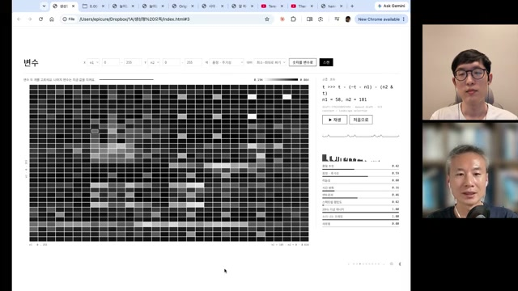
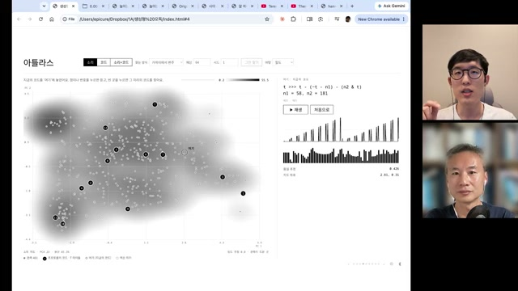
두 번째 단계: 닮은 그림에 이름 붙이기
본격적인 오독은 소리를 이미지로 바꾸면서 시작됨. 이미지의 구간별 픽셀과 비슷한 이모지를 회귀 방식으로 찾자, 원래 아무 관계 없던 패턴에 곰·주판·별똥별 같은 이름이 붙음.
구름에서 얼굴을 찾는 pareidolia와 닮은 과정. 최승준은 이름이 임의적이어도 이름을 알면 조작할 수 있다는 기호학적 관점을 제시하며, 변수 이름과 어슐러 K. 르 귄의 『어스시 연대기』를 언급함. 박종현은 이모지가 결국 소리 구간의 별칭이 된 것으로 정리함.
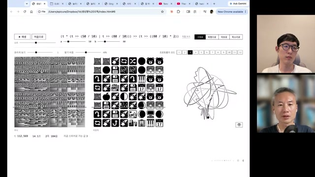
(t * (t >> (50 / 10) | t >> (80 / 10))) >> (t >> ((80 / 10) * 2)).
- 코드bytebeat 식과 변수
- 소리연산 결과의 재생
- 이미지소리를 시각 패턴으로 변환
- 이모지닮은 픽셀에 별칭 부여
- 합성 규칙별칭 사이의 관계 생성
- 프롬프트규칙을 템플릿에 투입
- 이야기 형식형식 선택까지 모델에 위임
- 게임「알 하나에 별 하나」
세 번째 단계: 별칭의 조합이 놀이가 되기까지
Little Alchemy의 합성 방식을 참고해 LLM이 이모지 사이의 규칙을 만들도록 함. ‘주판 + 플로피디스크 → 계산하는 기계’, ‘건반 + 곰 → 노래’, ‘별똥별 + 사과 → 꽃밭’ 같은 관계가 생김.
그 규칙을 템플릿에 넣어 프롬프트 자체를 생성하고, 결과물의 형식 선택까지 모델에게 맡김. 나온 것은 픽셀 아트 게임 「알 하나에 별 하나」. 최승준도 퍼포먼스 현장에서 플레이 방법을 모른 채 추측하며 진행했으며, 주판알로 무언가를 해서 창에 불을 모두 켜면 이야기가 끝나는 형식이었다고 설명함.
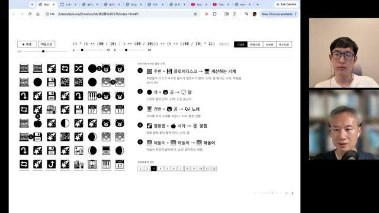
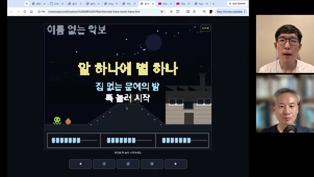
al-hana-byeol-hana.html, 부제는 ‘집 없는 문어의 밤’. 왼쪽 위 작은 글씨는 ‘이름 없는 악보’로 읽히지만 360p 화면이라 판독이 불확실함.
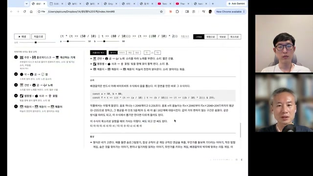
const a = 50, b = 80, bytebeat 식, 출력 해석과 놀이가 한 문서에 정리됨. 최승준은 이 작업을 John Cage·백남준, 더 거슬러 Mozart까지 이어지는 우연과 무작위성의 해석이라는 계보에 놓음.
여기서 제시된 가설은 조건부임. 프롬프트를 대량으로 만들고 이야기의 품질을 측정할 수 있다면 대량 생산한 결과 중 좋은 것을 찾을 수 있다는 것. 실험은 생성 경로를 보여 주지만, 이야기의 품질을 자동으로 판정하는 문제가 해결됐음을 보여 주지는 않음.
분포의 바깥과, 질문을 추천하는 사람
생성형 오독은 모델이 기존의 그럴듯한 답에서 얼마나 멀리 갈 수 있는지 묻는 실험. 두 사람은 창의성을 학습 분포의 안과 밖이라는 비유로 논의함.
박종현은 LLM과 diffusion 모델의 결과가 비슷해지는 현상을 “쇠 맛”으로 표현함. 인간 작품의 분포에서 벗어나면서도 얼토당토않지 않은 결과가 창의성의 한 조건이라면, 의도적인 오독이 실마리가 될 수 있다고 봄.
최승준은 지난 회차의 convex hull of ideas를 다시 꺼냄. 서로 멀리 떨어진 분야를 연결하는 것만으로도 예상하지 못한 결과가 나올 수 있다는 관점. 가까이 비어 있는 영역을 메우는 이득이 있고, 모델 역량과 탐색 공간이 커지면 새 빈틈이 생기며 영토가 확장될 수 있다고 봄.
익숙한 요소의 새로운 조합
박종현이 든 DALL·E 2의 ‘말 탄 우주비행사’ 예시. 아는 요소 사이의 빈자리를 찾는 창의성의 첫 단계로 설명함. 최승준은 이런 조합 안에도 의외성이 충분히 존재할 수 있다고 봄.
낯설지만 볼 만한 결과
본 적 없는 요소로 의미 있는 결과를 만드는 다음 단계. 다만 낯설다는 것만으로 충분하지 않으며, 볼 만한 결과가 아니라면 무작위 노이즈에 머물 수 있다는 박종현의 구분.
개념상 주의: ‘분포’와 ‘볼록 껍질’은 이 대화의 창의성 논의를 요약한 표현. 창의성을 정량 측정하거나 모델의 학습 분포 이탈을 검증한 결과는 아님.
수학을 둘러싼 상반된 정서
최승준은 AI가 수학에 주는 충격을 10년 전 바둑의 경험과 연결함. Terence Tao의 대담을 소개하며 수학이 낭만적인 시절에서 산업혁명의 시기로 이동해야 한다는 취지의 발언과 그 안의 씁쓸함을 전함. 정서에 대한 평가는 최승준의 해석임.
반면 3Blue1Brown의 Grant Sanderson은 수학에 들어가기 좋은 시기라는 낙관을 제시한 것으로 소개됨. 모델이 발전해도 탐구할 대상과 알고 싶어 하는 사람은 남는다는 관점. 최승준은 이 영상을 AI 요약으로 접했다고 밝혔으며, 수학자들의 상황에 먼저 공감해야 한다는 비판도 있었다고 전함.
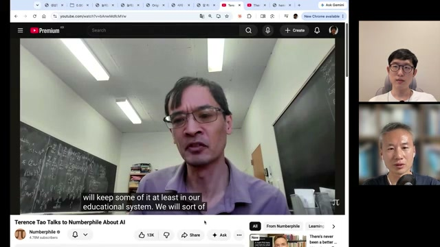
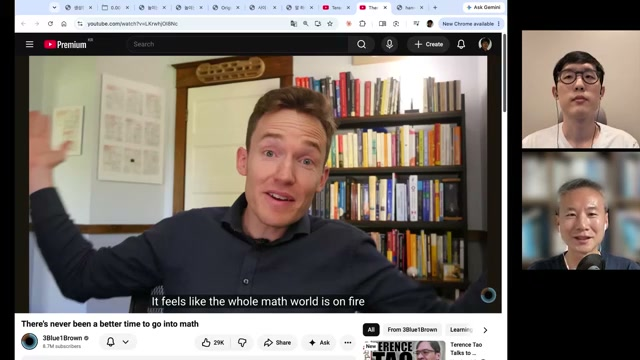
설명자의 역할은 ‘무엇을 궁금해할지’로 이동할까
Sina의 꿈은 “Fourier transform이 궁금해”라고 말하면 그 자리에서 시각 자료가 생성되는 인터랙티브 학습 플랫폼. Sina는 핵심 개념을 만드는 사람이 알아야 한다고 보지만, 박종현은 그 필요성에 동의하지 않음.
그렇다고 박종현이 설명자의 소멸을 전망한 것은 아님. 사람들은 자신이 무엇을 궁금해하는지도 모르는 경우가 많으므로, “이 개념이 가치 있으니 봐 보라”고 권하는 추천자의 역할이 남는다고 봄.
노정석이 지난 회차에서 제시한 “가치는 희소한 곳으로 간다”는 논지도 이어짐. 박종현은 AI가 판단하기 어려운 곳에 희소성이 남을 가능성이 높다고 봄. AI가 판단할 수 있는 것이 늘면 비슷한 결과도 많아지고, 다시 그 바깥이 사랑받을 것이라는 전망.
생성할 수 있어도, 남겨야 하는 원본
가장 구체적인 경계는 유치원 원가 영상에서 드러남. 음악과 애니메이션에는 AI를 활용했지만, 아이들이 그린 그림은 그대로 남김.
최승준은 피아노 녹음만 있던 원가 ‘놀이는 어린이의 삶이다’를 영상으로 제작함. 악보에서 음악을 추출하는 도구를 만들어 MP3를 뽑았고, 그 결과가 SoundFont·샘플링보다 품질이 낮아 Suno로 마무리했다고 설명함.
손글씨 애니메이션은 Opus가 제작함. 이전 폰트 작업에서 모델이 한글 획을 잘 이해한다는 경험을 바탕으로 시도했으며, 목적은 악보에 맞춰 타이밍을 정확히 조정하는 것. 아이들의 글씨를 스캔해 획으로 바꾸는 방법도 있었지만 훨씬 많은 노력이 필요했다고 함.
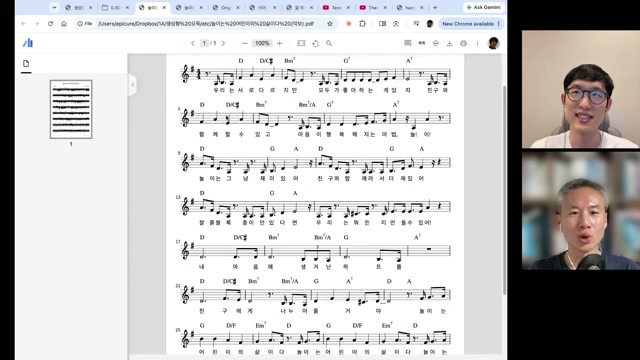
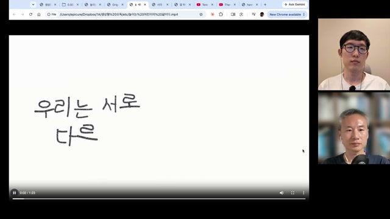
“그건 안 해야 되는 것.”
최승준 · 아이들의 그림까지 생성하는 선택에 대해, 00:58:25
그림도 얼마든지 생성할 수 있었지만, 최승준은 그 부분을 대체해서는 안 된다고 판단함. 주변에서도 그림까지 생성했다면 무슨 가치가 있겠느냐는 반응이 있었다고 함. 박종현 역시 자기 그림이 들어갔다는 사실만으로 아이들에게 가치 있는 작품이 된다고 동의함.
이때의 품질은 화면만으로 평가되지 않음. 아이가 참여했고 가족과 친구가 그 참여를 알아본다는 관계가 작품의 일부. 최승준은 이런 영역에는 마찰과 느림이 필요하며, 같은 방식으로 규모를 키우기 어렵다고 봄.
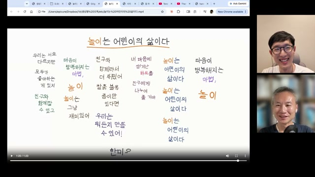
도구를 덜 쓰게 되어도, 결정하는 시간은 남는다
최승준은 음악을 다루는 트래커형 도구와 조합형 한글 폰트도 보여 줌. 여름부터 작업한 폰트는 11,172자를 공간에 맞게 배치할 수 있게 됐지만, 그 결과가 정말 좋은 폰트인지는 여전히 의문이라고 평가함.
최근 영상과 디자인 작업에서는 영상 편집 프로그램이나 벡터 편집 프로그램을 한 번도 켜지 않고, 사진 분할과 레이아웃까지 Claude Code 앱에서 처리했다고 함. 그러나 총작업 시간은 줄지 않았음. 어느 자리에 어떤 사진과 문구를 놓을지 결정하는 단계가 계속 남았기 때문.
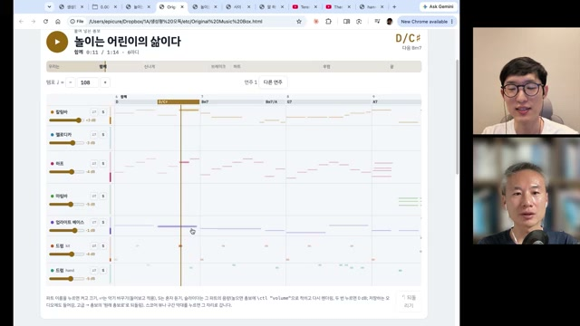
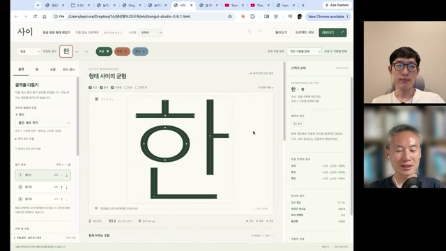
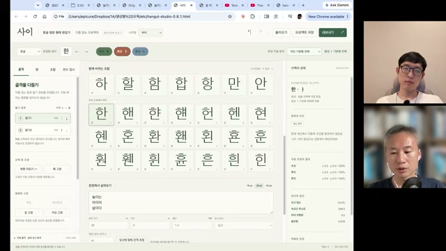
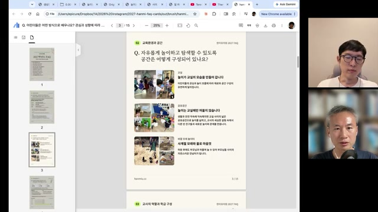
다음 제작에서 먼저 정할 것들
이 회차의 실용적 메시지는 더 많은 생성 기능을 붙이는 데서 끝나지 않음. 설명할 대상, 평가할 기준, 보존할 원본을 먼저 정하는 일로 이어짐.
코드 기반 영상은 수정과 버전 관리, 재현 가능한 제작 절차를 설계할 수 있는 방향을 제시함. 연구 설명, 실험 결과 애니메이션, 발표용 모션 그래픽처럼 정확성이 필요한 콘텐츠에 활용 여지가 있음. 다만 코드로 만들었다는 사실 자체가 설명의 정확성을 보장하지는 않음. 내용과 렌더링 결과를 확인하는 검증은 별도로 필요함.
| 회차의 관찰 | 제작에 적용할 판단 | 남은 확인 사항 |
|---|---|---|
| AI 편집 이후 업로드 증가 | 편당 품질과 발행 처리량을 별도 지표로 관리 | 업로드 수와 노출 차이를 고려한 성과 비교 |
| 여러 모델·도구가 준수한 결과 생성 | 도구 선정과 함께 큐레이션 기준 수립 | 동일 조건의 반복 평가와 선호도 확인 |
| 카테고리별 반응 차이 | 길이·편집 리듬·그래픽을 독자와 주제에 맞춤 | ‘좋은 콘텐츠’를 판정할 기준과 충분한 표본 |
| 오독의 연쇄가 게임으로 연결 | 다른 표현 형식 사이의 변환을 창작 실험에 활용 | 새로움과 완성도를 구분하는 평가 방법 |
| 아이 그림의 참여 가치 | 생성으로 대체하지 않을 재료를 명시 | 참여자와 관객이 중요하게 여기는 의미 확인 |
평준화될수록, 기준과 원본이 차이를 만든다
모션 그래픽이 비슷해지면 처음에는 신선했던 스타일도 희소성을 잃을 수 있음. 자체 디자인 시스템, 실제 현장, 원본 발언처럼 콘텐츠의 고유한 조건을 활용하는 것이 한 대응 방향. 이는 회차의 사례를 바탕으로 한 해석이며, 특정 방식의 성공을 보장하는 결론은 아님.
박종현은 알아서 PPT나 포스터를 잘 만드는 일이 1년 전과 크게 다르지 않다고 느낀다고 말함. 정답이 없고 보상을 주기 어려운 작업이기 때문이라는 설명. 검증 가능한 보상을 활용하는 RLVR 영역과 달리, 창작 자동화에는 좋은 결과를 판단할 기준이 계속 과제로 남을 수 있다는 전망으로 읽힘.
제작을 시작하기 전의 네 가지 확인
- 이번 작업이 설명할 것은 무엇인가대상 독자, 이해시킬 개념, 남길 한 문장을 먼저 정의.
- 좋은 결과를 무엇으로 판단할 것인가내용 정확성, 전달력, 완성도와 시청자 반응을 구분. 조회수 하나에 모든 판단을 맡기지 않기.
- 무엇을 생성으로 대체하지 않을 것인가참여자의 그림, 현장 경험, 실제 발언처럼 출처와 과정이 의미인 재료 확인.
- 어디까지 다시 만들 수 있게 남길 것인가원본, 코드, 버전, 생성 조건과 인간의 수정·판단 기록 보존.
영상이 코드가 되어도,
작품의 의미까지 자동으로 정해지지는 않는다
박종현의 채널 실험은 제작 처리량의 가능성을, 최승준의 오독 실험은 다른 표현으로 건너가는 창작의 가능성을 보여 줌. 유치원 원가 영상은 그 모든 가능성 앞에서도 남겨야 할 인간의 참여가 있음을 보여 줌.
다음 작업에서는 생성할 부분을 정하는 데 더해, 끝까지 남길 원본 하나를 정해 볼 수 있음. 그 선택이 무엇을 위한 작품인지 가장 분명하게 설명해 줄 수 있음.
출처, 기록 방식, 해석의 한계
-
01 · 1차 자료와 제작 정보
AI Frontier Korea — EP 119. 코드로 재생하는 AI: Video as Code와 생성형 오독
제공 노트상 게시일 2026년 10월 23일, 길이 1시간 3분 29초(3,809초). 출연 최승준·박종현, 편집 김유진. 채널명에 포함된 노정석은 이번 회차에 불참. - 02 · 녹화 시점 도입부 발언 기준 2026년 10월 18일 저녁. 박종현은 샌프란시스코 체류 마지막 밤에 원격 참여했으며 다음 날 귀국 예정이라고 설명함.
- 03 · 자막과 편집 범위 제공 노트는 화자 표기가 포함된 YouTube 한국어 수동 자막을 사용함. 이 문서는 해당 노트의 내용을 주제별로 재구성한 것으로, 영상·자막을 별도로 재검증하지 않음. 직접 인용, 출연자의 평가, 편집적 시사점을 문맥상 구분함.
- 04 · 이미지 자료 노트 작성 당시 720p 이상 스트림 다운로드가 HTTP 403으로 실패했고 로그인 쿠키는 사용하지 않았다고 기록됨. 이 글에 사용한 35장은 모두 360p(640×360) 추출 프레임. 작은 글씨와 픽셀 폰트의 판독에는 한계가 있음.
- 05 · 성과 수치와 비교 조건 조회수·구독자·댓글 수·편집 비중은 발표 화면과 출연자 발언에 근거하며 독립 검증되지 않음. 약 한 달의 채널 실험은 표본이 작고, 카테고리별 ‘20%’의 정의와 채널 나이·업로드 수 등 비교 조건이 충분히 공개되지 않음.
- 06 · 기술 명칭과 외부 자료 모델·라이브러리 명칭은 제공 노트와 발표 화면의 표기를 따름. 비교는 정성 평가이며 제품 성능에 대한 검증 자료가 아님. PROTOROOM, Numberphile, 3Blue1Brown 등은 회차 안에서 소개된 자료로, 이 글에서는 각각의 원문을 별도로 확인하지 않음.
- 07 · 재현에 필요한 정보 프롬프트 전문, 모델 실행 조건, 평가 표본, bytebeat 오디오 설정, 임베딩·UMAP 설정 등은 제공 노트에 없음. 이 글은 사례와 논의를 정리한 리포트이며 재현 실험 보고서는 아님.
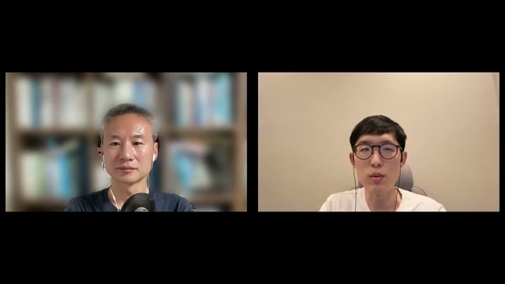